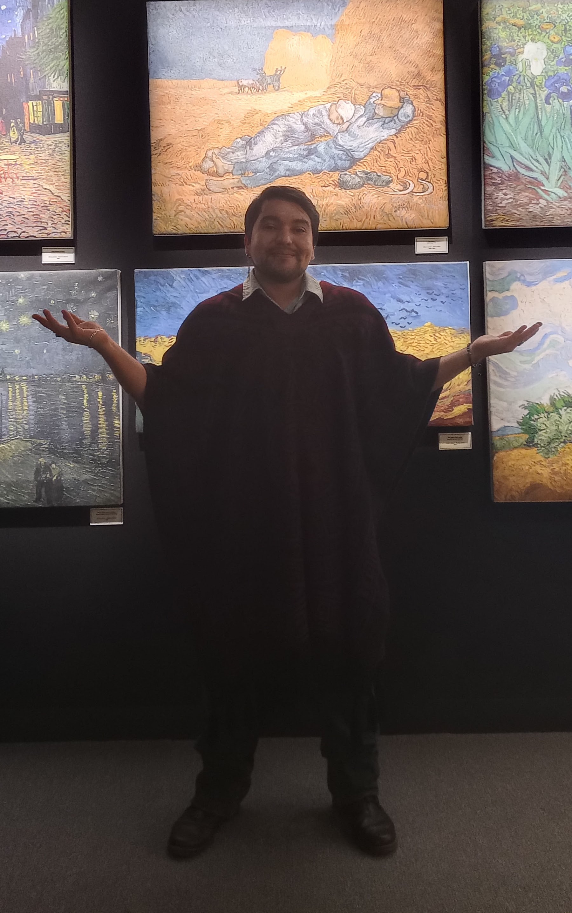

Francisco Nájera Varo
 Mucho gusto, me llamo francisco y soy estudiante de diseño gráfico en Benemérita Universidad Autónoma de Puebla, estoy a punto de finalizar mi carrera y me especializo en las áreas de la ilustración, el diseño editorial y los procesos gráficos como lo son la serigrafía, la aerografía, el grabado y los textiles.
He tomado cursos de xilografía y grabado en linóleo y en técnicas de impresión más tradicionales; también tomé un curso sobre cartonería y otro de modelado en arcilla y plastilina epóxica.
He participado en diversas exposiciones de arte, una de xilografía que se realizó en el centro de Cuernavaca, Morelos y otra llevada acabo en el restaurante Las Golondrinas en Cuautla, Morelos. También participé en la exposición de esculturas Los rostros del diseño expuesta en el complejo cultural universitario en el 2022 y en la exposición permanente de recreación de pinturas clásicas con técnica acrílica y mixta realizada en la Universidad politécnica metropolitana de Puebla en colaboración con la Benemérita Universidad Autónoma de Puebla en mayo del 2024.